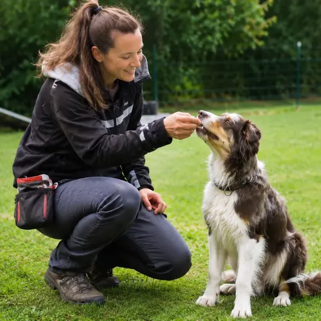

So lernt dein Hund
Belohne Verhalten, das du häufiger sehen möchtest. Eine Belohnung kann Futter, Spiel oder etwas anderes sein, das dein Hund gerade mag.
Übung starten
- Wähle einen ruhigen Ort und kleine, passende Belohnungen.
- Sobald dein Hund freiwillig zu dir schaut, sag ein kurzes Markerwort wie „Ja“ und belohne ihn unmittelbar.
- Wiederhole wenige Male und beende die Einheit, solange ihr beide Freude daran habt.
Nicht schimpfen, wenn etwas nicht klappt. Vereinfache die Übung.